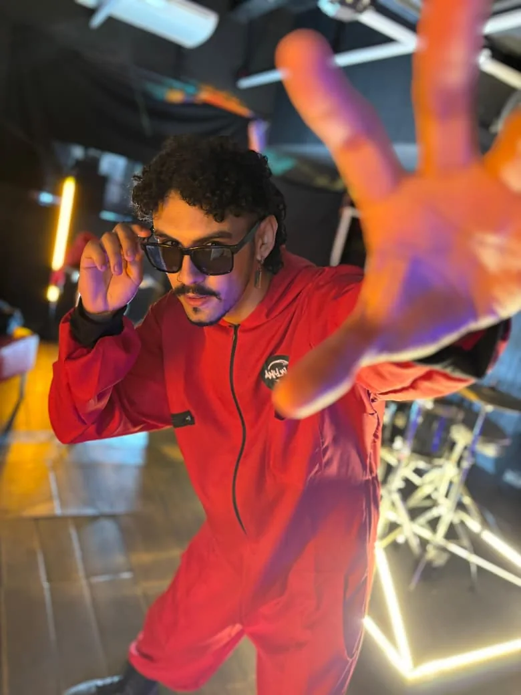

01GUIDAS
VocalistaConheça Guidas
Guidas sempre foi do mundo dos games, aos 9 anos conheceu bandas icônicas após viciar em Guitar Hero. Nos anos seguintes focou em aprender a tocar Guitarra na qual tinha ganhado de seu Pai, e ao mesmo tempo, treinava Canto. Em 2015 teve sua primeira banda na época de escola e fez suas primeiras apresentações ao vivo como Guitarrista e vocalista, a banda era de Punk rock. Após isso passou por diversas outras bandas, realizou participações e gravações de videoclipes até chegar na atual Banda Anyway.